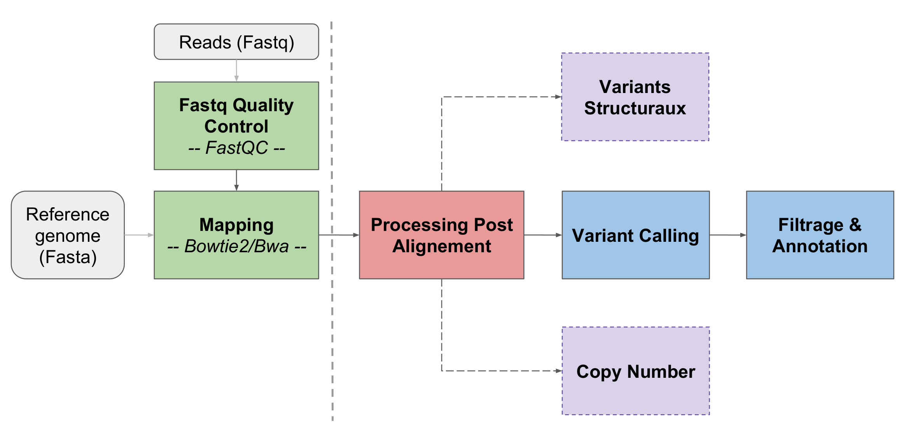
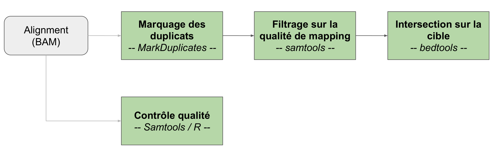
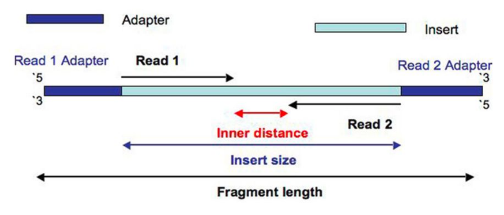
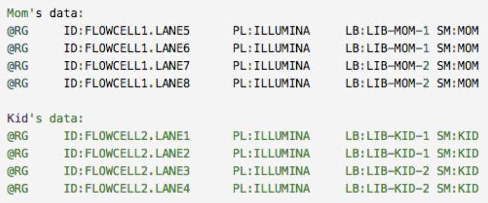
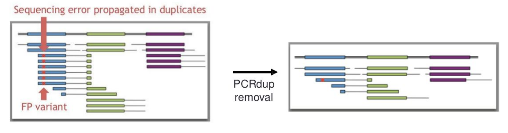
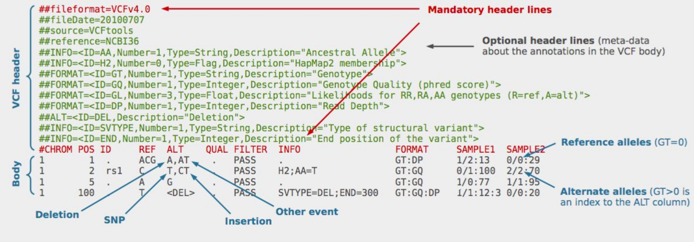

Analyse de variants génomiques
Module 5 - DUBii 2018
Olivier Rué & Thierry Grange
Objectifs de ce cours
- Comprendre les principes de la recherche de variants génomiques
- Présenter les outils et savoir manipuler les données
- Lancer une analyse !
Jeux de données
Depuis que l’homme fait de l’élevage, il essaie de faire en sorte de toujours améliorer sa production, que ce soit en quantité ou en qualité.
Les technologies de génotypage permettent maintenant de sélectionner les mâles reproducteurs en fonction du fond génétique qu’ils vont pouvoir transmettre à leur descendance.
Chez le bovin, il existe un locus de caractères quantitatifs (QTL) lié à la production de lait, situé sur le chromosome 6, et plus exactement sur une région de 700 kb, composée de 7 gènes.
Les échantillons QTL+ sont caractérisés par une diminution de la production en lait et une augmentation des concentrations en protéine et lipide.
Vous aurez à votre disposition :
- Un extrait des données de séquences d’un échantillon du projet 1000 génomes bovins, phénotypé comme QTL- : SRR1262731
- Les résultats du variant calling pour deux échantillons phénotypés QTL+ : SRR1205992 et SRR1205973
Quelle mutation est responsable de ce QTL ?
Environnement de travail
Les calculs seront lancés sur le cluster de calcul de l'IFB
Vous vous souvenez comment vous connecter ?
Connection au serveur de calcul de l'IFB
ssh user@core.cluster.france-bioinformatique.fr
Localisation des données
/shared/home/mbernard/atelier_variant/tp_variant
Introduction
Quels types de variants génomiques connaissez-vous ?
Insertion
Déletion
Inversion
Duplication
Translocation
Ces évènements sont classés en fonction de la taille de l'évènement
Copy Number Variations : CNVs
Structural Variations : SVs > 50 bp
Single Nucleotide Variations : SNVs, MNVs, et INDELs
Vocabulaire
- SNV (Single Nucleotide Variant)
- Toute altération nucléotidique sans implication de fréquence populationnelle
- SNP (Single Nucleotide Polymorphism)
- Implique qu'un variant est partagé dans la population (1%)
L'amalgame est souvent fait pour qualifier des SNPs
Variant Calling
Le Variant Calling est la détection automatisée des variants (SNVs et INDELs de petite taille) à partir de fichiers contenant des séquences alignées

Difficultés - Limitations
De nombreux variants Faux Positifs peuvent survenir des étapes précédentes :
- Artéfacts issus des cycle PCR pendant la préparation des échantillons
- Artéfacts issus de l’amplification en pont du séquençage (Illumina)
- Erreurs de lecture lors du “BaseCalling”
- Difficultés d’alignement (régions d’ADN répétées)
- Qualité du génome de référence (si il en existe un)
Des algorithmes complexes de détection compliquent l’interprétation des résultats
Variant Callers
Utilisés classiquement par la communauté :
- Samtools mpileup / Bcftools
- FreeBayes
- GATK HaplotypeCaller
- Samtools mpileup / Varscan2
- GATK Mutect (spécifique à la détection tumorale)
- DiscoSNP (Variant Calling sans génome de référence
- ...
Aucun outil n'est parfait : la qualité du calling dépend de l’ensemble du pipeline, des données analysées, et des paramètres utilisés pour filtrer les résultats
Méthode probalistique VS heuristique
- Méthode heuristique
- Méthode probabilistique (modèle Bayesien)
utilise des seuils pour valider ou non les variants (fréquence allélique, couverture en read, score de qualité)
utilise des modèles statistiques pour estimer la probabilité de chaque génotype possible, en prenant en compte les différents biais pouvant introduire du bruit dans les données
Concordance entre Variant Callers

Concordance de 91.7% entre Freebayes, Samtools, GATK HC (Hwang et al., 2015)
D’autres analyses montrent des taux plus bas :- 70% (O’Rawe et al., Genome Med, 2013) - 57% (Cornish et al., BioMed, 2015)
Sensibilité (recall) et spécificité (precision) diffèrent selon les outils et les paramètres utilisés
Existence de variants qui sont spécifiques aux différents callers
Hwang et al., “Systematic comparison of variant calling pipelines using gold standard personal exome variants” Scientific Reports, vol. 5, pp. 17875, 2015.
Sensibilité / Spécificité

Sensibilité : mesure de la capacité de l'outil à détecter le maximum de véritables variants : TP / (TP + FN)
Spécificité : Mesure la capacité de l’outil à ne pas détecter de faux variants : TN / (TN + FP)
Olson et al., Best practices for evaluating single nucleotide variant calling methods for microbial genomics, Frontiers in Genetics, 10.3389/fgene.2015.00235
Hwang et al., “Systematic comparison of variant calling pipelines using gold standard personal exome variants” Scientific Reports, vol. 5, pp. 17875, 2015
Performances évaluées par l'APR

Olson et al., Best practices for evaluating single nucleotide variant calling methods for microbial genomics, Frontiers in Genetics, 10.3389/fgene.2015.00235
Hwang et al., “Systematic comparison of variant calling pipelines using gold standard personal exome variants” Scientific Reports, vol. 5, pp. 17875, 2015
Recommandations
Faire de la bibliographie pour appréhender les outils utilisés sur votre organisme (haploïde/diploïde/hexaploïde ?)
Évaluer l'impact du plan d'expérience sur le Variant Calling (profondeur, qualité de la référence, nombre d'échantillons / conditions)
En cas d'organisme non modèle, privilégiez plusieurs outils et faites l'intersection pour obtenir une plus grande fiabilité
Workflow d'analyse
Processing post-alignement
Copie des jeux de données
# Listing des fichiers FASTQ, Genome et BAM
ls -lh /shared/home/mbernard/atelier_variant/tp_variant/fastq
ls -lh /shared/home/mbernard/atelier_variant/tp_variant/genome
ls -lh /shared/home/mbernard/atelier_variant/tp_variant/alignment_bwa
# Copie des fichiers dans notre home
cp -r /shared/home/mbernard/atelier_variant/tp_variant/ .
# Se déplacer dans le dossier alignment_bwa
cd ~/tp_variant/alignment_bwa
Contrôle qualité des fichiers d'alignement
Quelles informations regarder une fois le mapping effectué ?
- Pourcentage de reads alignés
- Pourcentage de paires alignées proprement
Quels outils ?
Samtools et Qualimap sont très utilisés. Également des packages R
Contrôle qualité des fichiers d'alignement
# Lancement de samtools
samtools --version # affiche la version (v.1.9)
samtools flagstat # affiche l'aide
samtools flagstat SRR1262731_extract.sort.bam >
SRR1262731.flagstat.txt
cat SRR1262731.flagstat.txt # visualisation du résultat
# Lancement de Qualimap
qualimap --version # affiche la version (v2.2.2)
qualimap bamqc # affiche l’aide
qualimap bamqc -nt 4 -outdir SRR1262731_extract_qualimap_report \
--java-mem-size=4G -bam SRR1262731_extract.sort.bam
Ajout des ReadGroups
Associe des informations sur la provenance des reads (run, échantillon, librairie, séquenceur...)
Ces informations sont indispensables à la plupart outils de Variant Calling
Ces informations ont pu être ajoutées au moment du mapping, sinon il existe des outils pour les rajouter (Samtools, Picard tools...)
Ajout des ReadGroups
# Vérifier la présence de RG
samtools view -H SRR1262731_extract.sort.bam| grep “^@RG”
# Ajouter un RG
picard AddOrReplaceReadGroups --version # affiche la version (v2.18.9)
picard AddOrReplaceReadGroups --help # affiche l'aide
picard AddOrReplaceReadGroups I=SRR1262731_extract.sort.bam O=SRR1262731_extract.sort.rg.bam RGID=1 RGPL=Illumina RGPU=PU RGSM=SRR1262731 RGLB=LB
Marquage des duplicats PCR
Identifier les reads provenant d'une même molécule issus de :
PCR duplicates : amplification PCR durant la préparation de la librairie
Optical duplicates : cluster illumina identifié comme deux clusters
Cela permet de réduire fortement le nombre de faux positifs
Marquage des duplicats PCR
picard MarkDuplicates --help # affiche l’aide
picard -Xmx8G MarkDuplicates I=SRR1262731_extract.sort.rg.bam O=SRR1262731_extract.sort.rg.md.bam M=SRR1262731_extract_metrics_md.txt VALIDATION_STRINGENCY=SILENT
samtools flagstat SRR1262731_extract.sort.rg.md.bam > SRR1262731_extract.md.flagstat.txt
cat SRR1262731_extract.md.flagstat.txt # nombre de duplicats
grep -A1 "LIBRARY" SRR1262731_extract_metrics_md.txt | less -S # % de pcrDup
Filtres sur les alignements
Réduire le fichier BAM en fonction de métriques d’alignements :
Qualité de mapping (seuil)
Retrait des lectures non alignées
Filtres sur les alignements
# Suppression des reads non mappés et filtre sur les reads avec MAPQ < 30
samtools view -bh -F 4 -q 30 SRR1262731_extract.sort.rg.md.bam > SRR1262731_extract.sort.rg.md.filt.bam
samtools flagstat SRR1262731_extract.sort.rg.md.filt.bam > SRR1262731_extract.filt.flagstat.txt
cat SRR1262731_extract.filt.flagstat.txt
Autres filtres possibles
Extraire une région d'intérêt
# Conservation des alignements dans les régions ciblées
bedtools --version # affiche la version (v2.27.1)
bedtools intersect --help # affiche l’aide
bedtools intersect -a SRR1262731_extract.sort.rg.md.filt.bam -b ../additionnal_data/QTL_BT6.bed > SRR1262731_extract.sort.rg.md.filt.onTarget.bam
samtools index SRR1262731_extract.sort.rg.md.filt.onTarget.bam
...
À la fin des filtres, vous devez trier et indexer le fichier BAM produit
Premier outil : GATK
GATK (Genome Analysis ToolKit) est une suite d’outils développée par le Broad Institute
Documentation très riche, Best Practices adaptées aux cas d'étude
Historiquement dévéloppé dans le cadre du projet 1000 génomes humains
Approche bayésienne pour le Variant Calling
Possibilité d'intégrer des variants de référence (recommandé)
Étapes de GATK
- Variant calling échantillon par échantillon (HaplotypeCaller)
- Combiner les informations des différents échantillons (CombineGVCFs)
- Variant calling intégratif (GentoypeGVCFs)
Lancement de GATK
cd ../
mkdir GATK
gatk HaplotypeCaller --version # affiche la version de GATK
gatk HaplotypeCaller # affiche l'aide
# Détection de variants GATK avec sortie gVCF
gatk HaplotypeCaller \
-I ../alignment_bwa/SRR1262731_extract.sort.rg.md.filt.onTarget.bam \
-L ../additionnal_data/QTL_BT6.bed -O gvcf/SRR1262731_extract_GATK.g.vcf \
-R ../genome/Bos_taurus.UMD3.1.dna.toplevel.6.fa \
--min-base-quality-score 18 \
--minimum-mapping-quality 30 \
-ERC "GVCF"
# Détection de variants simultanée sur les 3 échantillons du gVCF
gatk GenotypeGVCFs -R ../genome/Bos_taurus.UMD3.1.dna.toplevel.6.fa \
--variant gvcf/ pool_ GATK.g.vcf \
-O gvcf/ pool_ GATK.vcf
Second outil : VarScan2
VarScan2 est un outil qui utilise une approche heuristique pour le Variant Calling
Beaucoup plus rapide que GATK
Plus adapté aux très grandes profondeurs, aux échantillons poolés, et aux librairies dégradées / contaminées
Étapes de VarScan2
- Samtools mpileup pour définir les allèles à chaque position
- Établir un consensus
- Merger les échantillons
Lancement de VarScan2
samtools mpileup # Affichage de l’aide de samtools mpileup
varscan (v2.4.3) # Affichage de l’aide de varscan
varscan mpileup2cns -h
# Creation d’un nouveau dossier
cd ..
mkdir -p Varscan
cd Varscan
# Conversion du fichier d’alignement “bam” en format “mpileup”
samtools mpileup -q 30 -B -d 10000 -f ../genome/Bos_taurus.UMD3.1.dna.toplevel.6.fa ../alignment_bwa/SRR1262731_extract.sort.rg.md.filt.onTarget.bam > SRR1262731_extract.mpileup # -A pour garder les paires anormales
# Détection de variants avec Varscan
varscan mpileup2cns SRR1262731_extract.mpileup --output-vcf --variants --min-avg-qual 18 > SRR1262731_extract_Varscan.vcf
bgzip # v1.9
tabix # v1.9
vcftools # v0.1.16
# Renommer l’échantillon dans le VCF
sed -i 's|Sample1|SRR1262731.Varscan|g' SRR1262731_extract_Varscan.vcf
# Compression et indexation du fichiers vcf
bgzip -c SRR1262731_extract_Varscan.vcf > SRR1262731_extract_Varscan.vcf.gz
tabix -p vcf SRR1262731_extract_Varscan.vcf.gz
# Merge des trois échantillons appelés avec Varscan
vcf-merge SRR1262731_extract_Varscan.vcf.gz SRR1205992_extract_Varscan.vcf.gz SRR1205973_extract_Varscan.vcf.gz > pool_Varscan.vcf
Les formats VCF / gVCF
Exercice didactique sur le format VCFLe format VCF
Fichier texte
Trié sur les coordonnées, indexable et compressible (tabix)
Une section en-tête commençant par #
Une ligne par SNV (position sur le génome)
Une multitude d'informations...
Le format gVCF
Extension du format VCF
Informations sur TOUTES les positions du génome de référence
Très facile de rajouter un échantillon